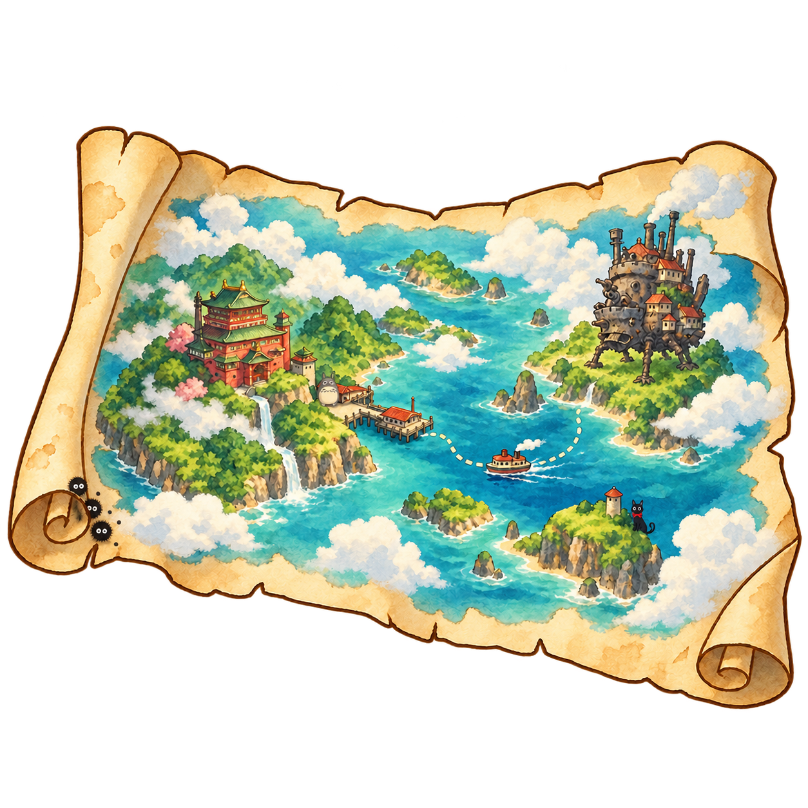

<!doctype html><html lang="ko"><meta charset="utf-8"><meta name="viewport" content="width=device-width,initial-scale=1"><title>지브리의 구름나루 미리보기</title><style>body{margin:0;background:#fbf5e9;color:#38584d;font:16px/1.7 sans-serif}main{max-width:1080px;margin:auto;padding:24px}h1{font-size:26px}img{display:block;max-width:100%;height:auto;border-radius:12px}figure{margin:24px 0}figcaption{padding:8px 0}.grid{display:grid;grid-template-columns:repeat(auto-fit,minmax(250px,1fr));gap:24px}.item{background:#e2ece4;border-radius:16px;padding:12px}.item img{height:280px;width:100%;object-fit:contain}.fishing{max-height:700px;margin:auto}small{color:#667b72}</style><main><h1>지브리의 구름나루</h1><p>구름 사이로 보이는 붉은 목욕탕과 움직이는 성, 초록 섬과 작은 나루.</p><small>지도 2,500골드 · 구름나루 바람 낚싯대 1,500골드 · 원격 DB 등록은 별도 설치 SQL 적용 필요</small><figure><figcaption>해역 풍경</figcaption></figure><figure><figcaption>낚시 배너</figcaption></figure><div class="grid"><figure class="item"><figcaption>지도 상점 썸네일</figcaption></figure><figure class="item"><figcaption>전용 낚싯대 썸네일</figcaption></figure></div><figure><figcaption>낚시 배경 · 넓은 수면과 나무 발판</figcaption></figure><div class="grid"><figure class="item"><figcaption>토토로 조각상 아이콘</figcaption></figure><figure class="item"><figcaption>토토로 낚시 찌</figcaption></figure></div></main></html>
